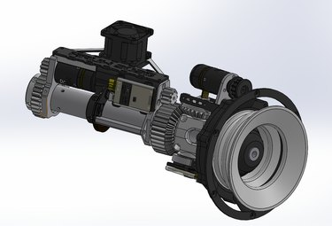
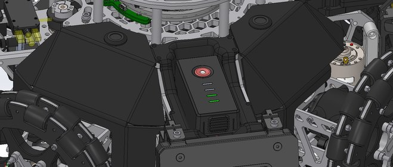
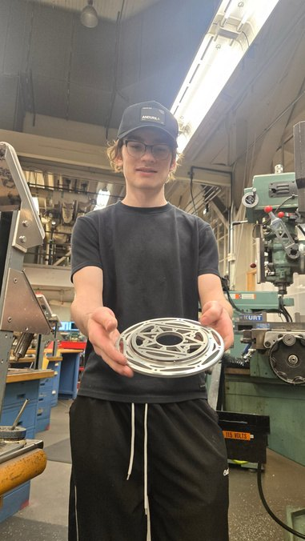
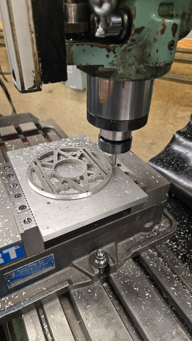
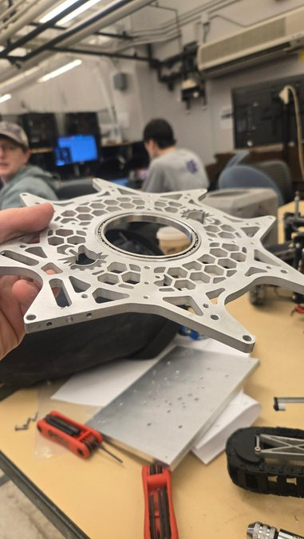

ARC Robotics Competition
Situation. A six-person UW team needed a compact, 20 lb robot to pick up and place cubes precisely.
Task. I owned the two-axis wrist design and fabrication.
Action. I iterated the gears to reduce backlash, added on-axis encoders, hardstops, and motor cooling, and integrated a slip ring. I created GD&T drawings, waterjet-cut and machined the parts, fitted bearings, and assembled the wrist. I also topology-optimized an electronics mount in nTop.
Result. The assembled wrist provides continuous 360-degree roll and 180-degree pitch, giving the end effector a hemispherical orientation workspace.





